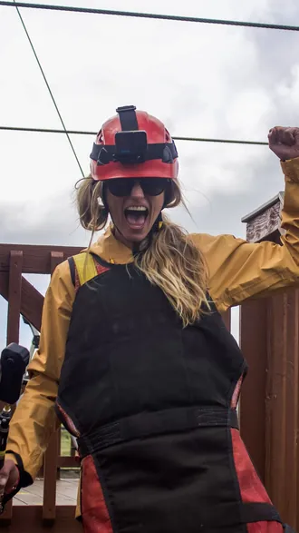
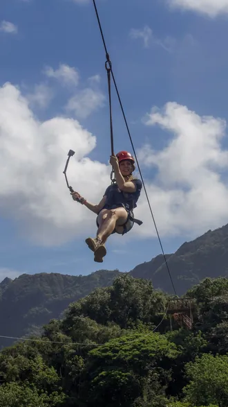
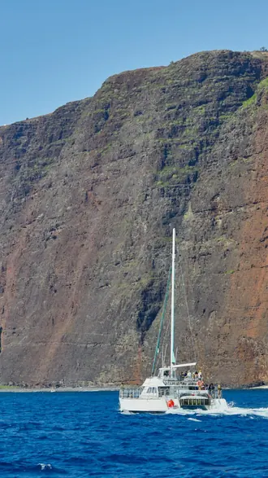
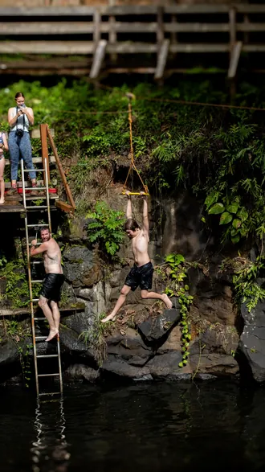
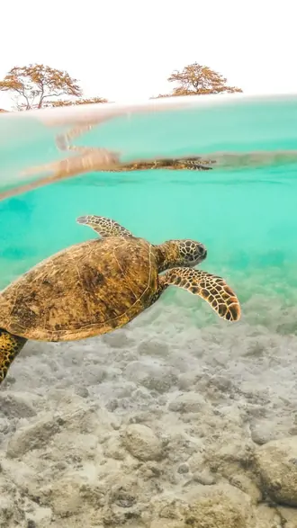

The system that turns a scroll into a booking.
Most operators post and hope. We build each reel around the moment a guest would pay to feel, then connect it to the booking path. Here is how the system works.
The stages
- Dream
- Plan
- Decide
- Experience
- Advocate
- Dreamers
Dream
Someone scrolling at home sees a reel and feels the trip for the first time. The job of the reel is one feeling, not a list of features.

- Planners
Plan
They are comparing operators now. Reels and posts answer the questions they are asking: what it is like, who it suits, what to expect.

- Bookers
Decide
The reel connects to the booking path: a link, a DM, a keyword reply. Nothing is left to hope.

- Guests
Experience
On the tour, the moment they came for happens. That moment is what we shoot.

- Storytellers
Advocate
Guests post it themselves, and their reel becomes the next person's dream. The loop closes.

Questions about the system
How do you measure whether the content works?
We report against bookings and discoverability, not vanity numbers: what the content reached, what it sent to the booking path, and what came back. Nothing is guaranteed, and we never claim a result a client has not approved.
Do you work with businesses that already have a social media manager?
Yes. Production works on its own, and your manager gets the films, reels and photos to run. The management retainer is for operators who want us to run the channels too.
Want this working for your operation?
Tell us what you run. We will show you where the reels would go and what they would connect to.
No pitch decks. A conversation about your operation first.